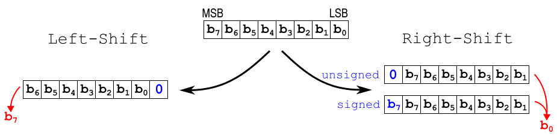
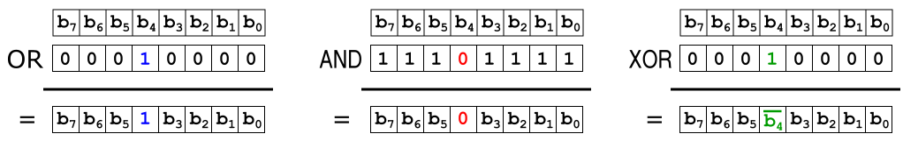
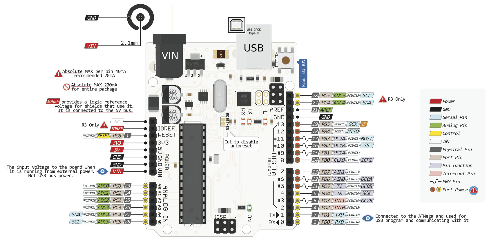

5. The Microcontroller
A microcontroller is a computer on a chip, designed to work with a minimal number of external components - in fact some can work with no external component at all.
Microcontrollers are manufactured to be embedded in products which are no perceived as computers by the end-user.
Due to their low cost and the flexibility of software solutions, they make an increasing fraction of the electronic hardware in general.
Like every computer, a microcontroller is a digital system, made of logic gates and memories, themselves made of transistors.
While desktop computers may also contain electro-magnetic devices like hard discs and electro-optical devices like CD/DVD units, microcontrollers are just highly complex fabrics of transistors, containing millions of them.
Having no operating system, a microcontroller executes constantly the only program its memory contains, however it is able to execute many tasks concurrently (in parallel).
5.1 Binary words and memory addresses
5.1.1 Words
Internally, computer work on binary data or bits.
Since working on one bit at a time would be inefficient, data are organized in binary words, which are fixed size collections of bits. For interoperability reasons, the word size is frequently a multiple of 8 bits.
An 8-bit binary word is an octet or byte.
5.1.2 Numbers
A binary word may represent a number, for this purpose a weight is assigned to each bit:
- the bit with the smallest weight (which is 1), is the LSB (Least Significant Bit)
- the bit with the greatest weight is the MSB (Most Significant Bit)
Signed integer number representation in computers normally uses the two's complement scheme, while fractionnal numbers said floating point numbers are represented by words divided in three fields: sign bit, exponent and mantissa.
Reading binary data is uneasy for humans, so developers prefer to use base-16 or hexadecimal numbers to represent binary words comfortably in documentation and programs.
5.1.3 Text
A binary word may be used to represent a text character. It appears that 8 bits are sufficient for representing the letters used by latin alphabets,
so the starting point was a code known as ASCII, representing all the characters of an american typewriter (for which 7 bits would have been sufficient).
Several solutions were proposed to extend this code to non-latin languages, the most successful being UTF-8, which uses a variable-length code, compatible with ASCII.
A piece of text is represented as a sequence of bytes, called a string. It is a common practice to use the zero byte (null character) to mark the end of the string.
5.1.4 Addresses
In computer memory, data words are stored in 1D-arrays, which can be considered as tables where each line contains a binary word.
The lines are numbered in sequence, and their numbers are called the addresses, which are themselves handled in binary form.
Many computers can read or write words which are larger than 8 bits, but to preserve the capability or writing or reading single bytes, the adresses are always byte addresses.
5.1.5 Instructions
Programs in machine code are sequences of instructions coded and stored as compact binary words. The code is architecture-specific and not readable by humans.
When the instruction word size is fixed, the archicture is called RISC (Reduced Instruction Set Computer), otherwise it is called CISC (Complex Instruction Set Computer).
- Programs written in languages like assembly, C, C++, Java are translated into binary code in advance, by a program called compiler (or assembler).
- Programs written in scripting languages like bash, javascript, python, php are translated during execution, by a program called interpreter.
5.1.6 Bit Level Operations
Bit level operations are implemented on every computer, but they are of a higher importance for the microcontroller developer, since they are involved in nearly every interaction with peripherals.
Bit shift
Bit shift operations shift bits to the left (which is towards higher weights) or to the right (which is towards lower weights), and there are two modes of right-shifting
When bits are shifted left by one position, the MSB (Most Significant Bit, b7 in the example) is dropped, while a zero is injected in the LSB position.
If the word represents a number (not too great), it is multiplied by 2
When bits are shifted right by one position in "unsigned" or "logic" mode, the LSB (Least Significant Bit, b0) is dropped, while a zero is injected in the MSB position.
If the word represents an unsigned number, it is divided by 2.
When bits are shifted right by one position in "signed" or "arithmetic" mode, the MSB is duplicated, with the intention of preserving the sign of a signed number coded in two's complement.
If the word represents a signed number, it is divided by 2.
In C and C++, these operations are supported by means of the "<<" and ">>" operators. The mode (unsigned or signed) is determined according to the type of the first operand.
Bit set and reset
In the first example, a bit is "forced" to 1 or "set", without affecting the other bits, by means of a bitwise logic OR operation with a constant containing zeros except in one place.
In the second example, a bit is "forced" to 0 or "reset", without affecting the other bits, by means of a bitwise logic AND operation with a constant containing ones except in one place. Such a constant is called a "mask".
In the third example, a bit is inverted or complemented, without affecting the other bits, by means of a bitwise logic XOR (eXclusive Or) operation with a constant containing zeroes except in one place.
In C and C++, these operations are supported by means of the bitwise logic operators "|", "&" and "^" operators. In addition, the "~" operator performs the NOT function, complementing all the bits.
Note: these should not be confused with the boolean operators "||", "&&" and "!" which handle words considered each one as a single boolean value.
Examples in C :
A |= ( 1 << 5 ); // bit 5 (weight 32) in A is forced to 1 B &= ~( 1 << N ); // bit N (weight 2N) in B is forced to zero
5.2 Microcontroller architecture

The main modules inside a microcontroller are :
- the CPU (Central Processing Unit),
which processes binary words that it reads and writes from memory and peripheral through the bus - the non-volatile memory, sometimes called ROM or flash memory or program memory,
which contains programs and constant data - the volatile memory, generally called RAM or data memory, which contains the temporary data
- the peripherals, which permit communication with the outer world in various forms
- the bus lines which support the communication between these modules
The parameters that characterize a microcontroller type are:
- the CPU family, which determines the instructions encoding and the performance level
- the word size, either 8 bits, 16 bits, 32 bits or 64 bits,
this is the typical data word that the CPU can process at once, but the definition of this parameter is not uniform, for example an 8-bit microcontrollers may use 16-bit addresses and 12-bit instructions, but performs calculations on 8-bit data only - the RAM size
- the program memory (flash) size
- the maximum clock frequency
- the capability of the peripheral modules
5.2.1 CPU features
The CPU contains a small number of registers which can store temporary data words which are accessed directly by instructions, without the need of an address.
Some of these have a special role, like keeping the next instruction address or the return address of a subroutine.
The CPU contains an ALU (Arithmetic and Logic Unit), which in the simplest form performs addition, subtraction and boolean and shift operations.
In this case, more complex operations like multiplication and division are performed by software, by combining simpler operations.
More advanced CPUs can perform multiplication and division in a single instruction, and high-end CPUs have the hardware floating point capability.
5.2.2 RAM memory
Microcontrollers use static RAM (SRAM), which is fast and consumes little power, but is limited to smaller capacities than the dynamic RAM (DRAM) used in desktop computers.
RAM is volatile, which means that the data it contains are lost each time the power is switched off.
The fact of being volatile is a disvantage, but this memory is much faster than non-volatile memories in particular when writing.
In architectures where the data memory and the program memory are entirely separated ("Harward architectures"), the RAM is simply called "data memory".
5.2.3 FLASH memory
Microcontrollers need some non-volatile memory to have some program ready to execute immediately after power-up.
Non volatile memory can be :
- pure ROM (Read Only Memory) also named OTP (One Time Programmable) memory
- EEPROM (Electrically Erasable and Programmable ROM) which can be written but is treated as ROM by the application programs
- FLASH memory, which is just a high density EEPROM where erasing is done one large blocks instead of single words
In modern microcontrollers, programs are generally stored in flash memory. The CPU can read this memory, but not write into it.
Writing requires either an external hardware or a dedicated peripheral, and takes much more time than a regular memory access.
A small amount of OTP-ROM is sometimes present to store the program which is used to write programs into the flash memory under control of the development computer. Such a program is called the bootloader.
5.2.4 Peripherals
The CPU communicates with the peripheral by means of specialized registers which have a dedicated address space besides the main memories.
There are many types of specialized peripherals, here are the most common.
GPIO: General Purpose Input-Output
Each pin involved in GPIO can be programmed as a logic input or a logic output, and then handles one bit at a time under program control.
Logic 1 or "true" is represented by a high voltage, close to the power supply voltage (most often 3.3 Volts), while logic 0 or "false" is represented by a voltage close to zero (ground).
GPIO pins can source or sink a limited current, 4 mA to 20 mA depending on the model
Serial communication principle
Serial communication involves the transmission of all the bits of each word in sequence, one after the other. The speed is reduced compared with parallel busses, but the cost of wiring is lower.
Some serial communication schemes transmit the MSB (most significant bit) first, some others transmit the LSB first.
| data wires | clock wires | select wires | total wires incl. gnd | typ. speed | protocol | range | ||
| UART | Universal Asynchronous Receiver-Transmitter | 2 | 0 | 0 | 3 | 115200 Bauds | peer-to-peer | PCBs |
| I2C TWI | Inter-Integrated Circuit Two Wire Interface | 1 | 1 | 0 | 3 | 400 kbits/s | master-slave | PCBs |
| SPI | Serial Peripheral Interface | 2 | 1 | 1+ | 5 | 25 Mbits/s | master-slave | PCBs |
| USB | Universal Serial Bus | 2 | 0 | 0 | 4 | 480 Mbits/s | master-slave | Desk |
| Ethernet | LAN (Local Area Network) | 4 | 0 | 0 | 4 | 100 Mbits/s | peer-to-peer | Building |
Serial asynchronous communication : UART
UART transmits blocks of one byte, framed by a "start" bit (always zero) and a "stop bit" (always 1).

The start bit leading edge causes the synchronisation of the receiver clock, which is used to sample the data bits. The synchronization is reset at the start of each byte
The receiver clock frequency must be configured to match the transmitter clock frequency with a sufficient accuracy (~2%).
This frequency is historically called the "Baud rate". The usual Baud rates values are such as 300 * 2N.
No master is defined at the hardware level, this is left to the application software.
For increasing the range to building area, the UART signals are amplified to higher voltages (RS232) or differential signals (RS485). RS232 is obsolete but RS485 is still used for industrial equipments
Serial synchronous communication : I2C
I2C is sometimes named TWI for historical copyright reasons.
The master provides the clock signal on SCL, and the data line SDA is bidirectional.
The master creates special patterns S (Start) and P (stop) to mark the block limits.
The direction of transfer on the data line may be changed during a transaction, which involves a complex protocol.
The bus supports several slaves, thanks to an address field inserted by the master at the beginning of a transaction.
Serial synchronous communication : SPI
SPI is a very simple but loosely defined serial communication scheme

It uses 2 unidirectional data lines MOSI (Master Out Slave In) and MISO (Master In Slave Out).
There is one active-low SS (Slave Select) signal for each slave, which the master uses to select a slave before driving the clock line SCLK.
There are 4 modes described in the initial specification, but what really matters is the direction of the clock edge which is used to sample data at the receiving end of each data line.
- Modes 0 and 3: data sampled at the rising clock edge
- Modes 1 and 2: data sampled at the falling clock edge
TIMER: Time keeping and PWM signal generation
A timer is a digital binary counter driven by a periodic signal (the CPU clock or a signal derived from it by frequency division).
It provides a high resolution time measurement (microseconds) and can generate periodic binary signals of arbitrary period and arbitrary pulse width (period and pulse width being multiples of the clock period).

The pulse width may be modulated in real time to produce a PWM signal (Pulse Width Modulation).
The average value of the PWM signal is proportional to the function used to modulate the pulse width.
This makes a convenient way to generate a slowly varying analog signal using a single digital pin, and to control a power device with reduced losses compared to a continous control.
ADC and DAC
The ADC (Analog to Digital Converter) produces a binary number proportional to the voltage received on a pin.
The conversion is not continuous and must be triggered periodically by software, or directly by a timer.
This periodic conversion has the same limitations as any sampled signal processing, notably the input signal frequency should no exceed half the sampling frequency, otherwise the acquired signal is corrupted by aliasing (See chapter 4.4 The aliasing issue)
The DAC (Digital to Analog Converter) produces the inverse service. Notice that a timer in PWM mode also makes an economical DAC solution, but its output should be filtered to obtain a clean analog signal.
RTC : Real Time Clock
The RTC keeps the time and date even when the main power supply is off, having a separate power supply.
Like watches, the RTC has a very low power need, being able to run for years on a small battery.
The RTC modules frequently contain a small amount of memory called the backup RAM, which keep application data when the microcontroller is off.
5.2.5 Interrupts
The CPU may accept a hardware interrupt signal from some peripherals. When this happens, the CPU completes the current instruction and then leaves the current instruction sequence and jumps to a specific interrupt service routine subroutine or interrupt handler, in order to perform some action required by the peripheral which emitted the interrupt request.
When the end of the interrupt routine is reached, the CPU returns to the instruction sequence where it was interrupted. To ensure that the interrupted task is not disturbed by this process, a context saving sequence is strictly applied before entering the interrupt routine, and a matching context restoring sequence is applied upon return, by hardware and software combined.
Interrupt vectoring
An interrupt controller may be used to manage several sources of interrupt requests, and to associate a dedicated interrupt routine for each of these sources. This is called interrupt vectoring.
Interrupt priority
The interrupt controller manages simultaneous interrupt requests by following some priority rules. On the simplest microcontrollers, a fixed priority is assigned to each peripheral. On more advanced ones, the priority level of each source can be set by program.
Interrupt nesting
On the simplest microcontrollers, interrupts are disabled upon entry into an interrupt routine, but the code inside this routine may re-enable interrupts to permit the interruption of itself by another source, considered as deserving a quicker handling. In any case interrupts are automatically enabled after return from the interrupt routine.
On more advanced architecture, the interrupt controller may permit automatically the interruption of an interrupt routine by another interrupt of higher priority, this is called interrupt nesting.
Deadlock risk
If inside an interrupt routine, a function is called to perform some communication action which depends on a lower priority interrupt service, this action will never be completed and the system will be blocked. To avoid this, the developer should be aware of all possible sources of interrupt requests.
Multitasking
Interrupts are essentiel to the implementation of multitasking, in computers of any size as well as in microcontrollers. A periodic interrupt requested by a timer is theoretically sufficient to make a multitask system, but a more efficient handling of I/O streams is permitted by specific interrupts
- In personal computers, interrupts are managed by the operating system in a manner which is transparent for the application programs
- On microcontrollers, managing interrupts is the developer's business
5.3 Working with the Arduino
Arduino is the name of an Italian private company which made a successful attempt to enable non-professionals to learn electronics through embedded computing, and produce some home-made microcontroller based applications.
In this context, Arduino produced a minimal development platform, based on a moderate cost microcontroller board and a user-friendly free development software.
When people talk about "The Arduino" they refer to the board, or to the microcontroller itself.
While some choices made by Arduino are highly questionable, the benefit of this project is a worldwide acceleration of the DIY (Do-It-Yourself) microcontroller development activity. Notably many competing manufacturers put higher performance, lower cost boards on the market, while the open source community produced alternate software solutions.
5.3.1 The Arduino Uno hardware
The Uno is the first Arduino board and the most famous. While its technology was nearly outdated when it was introduced, it is still produced.
The board is equipped with two microcontrollers :
- the target microcontroller, which executes the user's programs and exposes 22 I/O pins for external wiring
- the USB gateway microcontroller, which acts like a bridge between the target microcontroller's UART and the host computer's USB port
On delivery, the target microcontroller flash memory contains already a small bootloader program, which is ready to receive program data via the UART and write them into the remaining space in the flash memory. The gateway microcontroller contains the USB-UART bridge software.
Why 2 microcontrollers? The USB communication protocol is extremely complex and having the USB port on the target microcontroller would not have left sufficient resources for the user programs. In the other hand, the UART-based bootloader is lightweight.
The target microcontroller is an ATmega328P made by ATMEL (now belonging to Microchip), with the following characteristics:
- 8-bit AVR RISC CPU
- 5 Volts power supply and I/O
- 16MHz clock
- 32 kbytes of flash memory
- 1 kbyte of EEPROM memory
- 2 kbytes of RAM memory
- Harvard architecture : Flash and RAM accessed in parallel
- Vectored interrupts (26 vectors) with fixed priority
- Three timers with 2 PWM channels each
- One SPI port, with an 8-bit shift register
- One UART
- One I2S "2-wire Serial Interface"
- One ADC, 10 bits resolution, 15 ksamp/s, 6 multiplexed inputs
The Uno board exposes a proprietary connector layout for which many accessory boards, called "shields", were developed.
The Uno board can be powered by the USB (5 Volts nominal, 4.5 Volts min.) or by an external supply from 6 to 14 Volts, thanks to a 5 Volts voltage regulator. The board also has a 3.3 Volts regulator for the needs of shields.
Note: Around year 2000 the standard supply voltage for microcontrollers was shifted from 5 Volts to 3.3 Volts, this change was also applied to every digital chip communicating with SPI, I2C, UART.
The ATmega328P could run from 3.3 Volts at a reduced clock frequency, but Arduino chose to stick to 5 Volts. For this reason, the accessory boards or "shields" frequently include voltage translator ICs to ensure compatibility with 3.3V chips.
5.3.2 The Arduino software
Arduino proposes an IDE (Integrated Development Environment) running on a host computer (Windows, Mac OS, Linux).
This IDE is free and open-source, being based on existing open-source projects, mainly the wiring IDE and the GCC compiler, which is a C/C++ toolchain.
The IDE contains the following software components :
- A simple text editor with syntax highlighting
- A build system which is aware of the Arduino libraries and performs some text pre-processing before calling the GCC compiler and linker
- An uploader utility, which communicates with the target microcontroller's bootloader via the USB link and the USB to UART bridge
- A serial monitor, which is a terminal allowing to exchange text messages with a user program running on the target microcontroller
- A serial plotter, which draws graphics from the data it receives from the target microcontroller
With the intention of keeping things apparently simple, the IDE ('legacy version') comes with the following limitations:
- Splitting the source code into more than one file is not encouraged
- Browsing the source code over multiple files is not supported, but a context sensitive help is available for Arduino library functions
- Build steps are hidden, unless switched to "verbose" in the preferences
- No incremental build
- No debugger
However, the system is more open that it seems at first sight. With some efforts it is possible to split the source code, use legacy C text formatting (snprintf), perform direct access to the peripheral registers, and use interrupts (all this thanks to the avr-libc library)
The C/C++ standards require a main() function with 2 optional arguments, returning an int.
This is not adapted to the microcontroller, where the program cannot receive any argument and must never return.
For this reason, the Arduino IDE expects the main program file to contain instead a setup() function and a loop() function.
The setup() function is called once, then the loop() function call is repeated indefinitely.
(These calls are included in a main() function created automatically by the Arduino build system).
Arduino jargon:
| Arduino term | actual meaning |
| Arduino language | C++, with specific libraries |
| sketch | a project for Arduino, in fact a directory containing a single .ino source file and some documentation |
| sketchbook location | library search path root |
| file extension .ino | file extension .cpp |
| Verify | compile and link |
| Upload | compile and link then upload |
| analogRead() | start an ADC conversion, wait for completion, return value |
| analogWrite() | first time, start a timer as PWM generator on that pin, else update pulse width |
| attachInterrupt() | configure an external interrupt linked to one pin |
5.3.3 The microcontroller as a PC peripheral
The USB to UART bridge which is on the Uno board is viewed by the host computer as a CDC (Communication Device Class) USB device.
This means that, beside the two possibilities offered by the Arduino IDE, any program running on the host computer may dialog with the target microcontroller, using the standard serial communication interface of the computer (the COM ports in Windows, the TTYs on Linux).
The Arduino IDE has two built-in tools for serial communication :
- the Serial Monitor, a text-only terminal
- the Serial Plotter, displaying curves according to numbers received from the microcontroller
To send a text command to the board, use the input area at the top of the serial monitor or at the bottom of the serial plotter. A single byte command may be sent, by choosing "No line ending" instead of "Newline".
The serial plotter has some interesting undocumented properties, here are some tips:
- to plot N curves :
- send an initial text line with N words (each one beginning with a letter, not a digit), to be displayed as labels for the curves
- then send text lines, each one containing N numbers (separated by spaces or commas),
each line will append a new segment to each of the N curves, and increments X by one unit
- horizontal scale : the X unit is always 1/500th of the window width, the first 500 text lines fill the window, then the curves are scrolled to the left
- vertical scale : is automatically adjusted,
to keep it stable, plot two additional curves with constant Ymin and Ymax values, then they will "frame" the graphics - to plot variables in real time, send lines periodically with a constant period, (delay function, or better, timer interrupt)
- to plot calculated curves, or previously acquired measurements, send exactly 500 text lines, then pause to freeze the graphics
Notes:
- The serial monitor and the serial plotter cannot be active simultaeously
- Each time the serial monitor or the serial plotter is started, the target microcontroller is reset.
5.3.4 Low level programming
"Low level" means "close to the hardware", in a layered model of application development.
The complications of this level are "abstracted" (hidden) by an intermediate layer of apparently simple functions ("drivers"), but it is sometimes necessary to be aware of the hidden details. The first step is to get familiar with the target microcontroller reference manual
GPIO direct access
Pin direction may be configured using the pinMode() function, writing and reading can be done one pin at a time with digitalWrite() and digitalRead()
By talking directly to the GPIO peripheral, it is possible to manipulate several pins simultaneously (up to 8).
For this it is worth noting that the I/O pins are grouped in GPIO ports, each one containing 8 pins.
In the case of the Uno board, three ports PB, PC and PD are used,
the correspondance between the GPIO port numbering and the Arduino pin numbering is documented on the Arduino UNO schematic and the pinout diagram above.
Each port exposes three 8-bit registers, DDRx (the direction register), PORTx (the output register), PINx (the input register), x being B, C or D
In order to facilitate the access to these registers from a C/C++ program, symbols for every peripheral register are defined in file iom328p.h which is included by io.h which is included by Arduino.h which is included automatically in every Arduino "sketch".
Timer interrupt and time measurement
Function millis() provides a value of the duration elapsed since the last CPU reset, in ms. (It overflows approximately every 50 days).
On the Uno, Timer 0 is configured for providing this service. With a prescaled clock of 16000000/64 = 250000 Hz, its internal counter measures time with a 4 us resolution, and with its 8-bit capacity it overflows every 1.024 ms.
In order to keep time on a longer scale, an overflow interrupt is configured to count the overflow events, and compute time in milliseconds from the overflows count and the timer internal counter.
Function delay() just sets an arrival date (millis() + duration) and loops waiting for reaching this date.
In multitasking applications, such a waiting loop is merged in the main loop in order to perform other tasks while waiting.
In the other hand, function delayMicroseconds() is based on an estimate of the execution duration of a repeated instructions sequence, it is worth using only for short durations (less than 1 ms).
Find file writing.c in the Arduino installation directory for all details
PWM outputs
The analogWrite() function starts a PWM source on one of the 6 PWM-capable pins, which is bound to one of the three timers of the Uno.
This function allows to vary the duty cycle from 0 to 100% according to an 8-bit argument (0 to 255), but does not allow any control over the frequency.
| digital pin | period | |
| timer 0 | 5 | 1024 us |
| timer 0 | 6 | 1024 us |
| timer 1 | 9 | 2040 us |
| timer 1 | 10 | 2040 us |
| timer 2 | 3 | 2040 us |
| timer 2 | 11 | 2040 us |
Note: timer 0 is used for two purposes, which are compatible.
More details in document Secrets of Arduino PWM
Document links :
- en.wikipedia.org/wiki/Microcontroller
- C language for beginners
- C++ language for beginners
- en.wikipedia.org/wiki/Pulse-width_modulation
- docs.arduino.cc/tutorials/generic/secrets-of-arduino-pwm
- en.wikipedia.org/wiki/Serial_Peripheral_Interface
- en.wikipedia.org/wiki/I²C
- en.wikipedia.org/wiki/Universal_asynchronous_receiver-transmitter
- en.wikipedia.org/wiki/UTF-8
- en.wikipedia.org/wiki/Binary_number
- en.wikipedia.org/wiki/Hexadecimal
- en.wikipedia.org/wiki/Two%27s_complement
- Arduino UNO schematic
- ATmega328
- www.nongnu.org/avr-libc/user-manual/modules.html